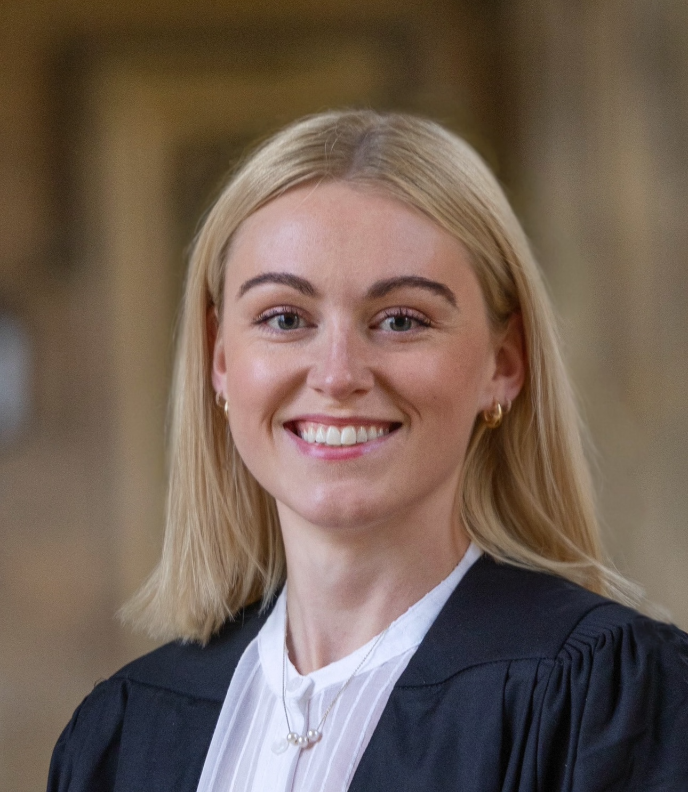

Therapist Skepticism and Adaptation to Teletherapy Under Enforced Uptake, With Theoretical Considerations for AI-Mediated Care: Qualitative Study.
Parri, L. A., Lau, R., & Addy, K. JMIR Formative Research, 10, e95939.
DOI
Psychology PhD Researcher · University of Cambridge
Exploring how people experience, engage with, and benefit from research, digital tools, and interventions. Happiest on projects with many moving parts, tackling a range of ideas, people, and methods.
My PhD at the Brain, Language, and Bilingualism Lab combines meta-analysis and behavioural research to study individual differences in adolescent language learning. An Adolescent Advisory Group has helped to shape the work, which will hopefully inform the development of personalised language learning tools.
Bangor University
Supporting randomised controlled trials of school literacy interventions, including assessments, delivery checks and data coordination, during a three-month fellowship.
University of Cambridge
Investigating predictor-outcome associations in adolescent additional-language learning, combining evidence synthesis, behavioural research and young people’s input.
King’s College London
Digital mental-health research, participant engagement and assessment in a large multi-site psychosis relapse-prediction study.
NIHR Maudsley Biomedical Research Centre
Research-registry coordination, PPIE coordination for multiple studies, and PPIE training development and delivery for clinicians and researchers.
King’s College London
Qualitative evaluation of acceptability, service-user advisory panels and digital inclusion resources.
Bangor University
Supporting research on remote teaching of literacy and numeracy to children.
Onnen Productions
Created information packs about obsessive-compulsive disorder (OCD) to accompany the show 12.
Prosiect Perthyn
Advised on lived-experience research methods and supported dissemination for a Welsh Government-funded, community-led project on Welsh-language preservation.
Covered in Jam Productions
Facilitated post-show audience discussions and one-to-one interviews for the show That’s Not My Name, informing future productions exploring mental health and anti-psychiatry.
Gibson Research Consultancy (GRC)
Led patient-centred linguistic validation studies through cognitive debriefing interviews and concept elaboration reports, and trained and managed junior consultants.
Parri, L. A., Lau, R., & Addy, K. JMIR Formative Research, 10, e95939.
DOIBelcher, H. L., Parri, L., Kilcoyne, I., Evans, J., Lewin, C. D. C., Lau, R., … & Wykes, T. BJPsych Open, 11(4), e120.
DOICella, M., Parri, L., Wang, K., Quinn, R., Oyeleye, O., Jin, H., & Wykes, T. Schizophrenia Research, 267, 367–372.
DOIZahid, U., Lawrence, E. G., de Freitas, D. F., Parri, L. A., Quadros, W., Hua, P., … & Bhui, K. Neuroscience & Biobehavioral Reviews, 159, 105614.
DOIParri, L. A., Barret, K., Hill, R., Hoque, A., Isok, I., Kenny, A., … & Cella, M. Behavioural and Cognitive Psychotherapy, 52(5), 495–507.
DOIda Cunha Lewin, C., Hudson, G., & Parri, L. The Lancet Psychiatry, 10(9), 666–667.
DOIPanel member at the School of Biological Sciences event, sharing my involvement work and prior experience with PPIR, discussing meaningful public involvement and co-production in research.
Poster presentation of a systematic review and meta-analysis exploring the predictors of second-language attainment among adolescents.
Poster presentation of a quantitative study on the efficacy of remote cognitive remediation for psychosis service users.
Poster presentation of a qualitative study on the acceptability of remote cognitive remediation from the perspective of psychosis service users.
Live presentation of ongoing work at our lab in the Institute of Psychiatry, Psychology, and Neuroscience.
Live presentation of MSc dissertation, a qualitative study on therapists’ experiences of transitioning to remote-only delivery.
Upcoming: Created and delivered two talks for the Inquisitas Autumn Lectures Series: one for the Psychology series (topic: participatory research) and one for the Medical Ethics series (topic: ethics of digital interventions in mental health).
Created and delivered five Psychology and Behavioural Sciences sessions and a final project to A-level students for Gonville and Caius College. Sessions lasted 90 minutes and covered foundational and applied topics within the field.
Co-developed the new BSc module Lived Experience in Mental Health Research, devised the module topics and assessment, and delivered two seminars on co-production and creative research dissemination methods.
Co-developed and co-led training on how to do patient and public involvement and engagement well to healthcare professionals and academic researchers every quarter, delivering monthly hour long sessions.
Led public speaking classes for undergraduate students at Bangor University, delivering three one-hour weekly classes of 25 students each year.
Blog article reflecting on my route into doctoral research and the different paths that can lead to a PhD.
Read the blog articleInterviewed about my PhD on adolescent language learning, “Sut mae pobl ifanc yn dysgu iaith?” on the Dros Ginio show.
Listen to the interview Read the transcriptBlog article for CIRCuiTS™ examining ChatGPT’s answers about cognitive remediation, including their accuracy and limitations.
Read the blog articleRepresented the Brain, Language, and Bilingualism Lab, engaging with the public to raise interest and awareness in language research, and promoting opportunities to get involved.
Accessible and informative blog articles for Gibson Research Consultancy on research methods, academic critique, and patient-centered research.
Peer review Understanding tokenism Meaningful involvementAI in peer review Peer review challenges Becoming a lived experience researcher History of lived experience research Person-centred research Preparing a study Doing a systematic review Systematic review survival kit Why tokenism happens Remote or in-person interviews Triangulation Research design Mixed methods Why informed consent matters Informed consent tipsTwo articles for CIRCuiTS™, sharing findings on the delivery and acceptability of remote cognitive remediation for people with psychosis.
Remote delivery Service users’ perspectivesEight blog articles for Myf.Cymru, covering various mental-health topics for students, including phobias, panic attacks, negative thoughts and sleep.
Phobia myths Supporting others Coping with panic Panic symptoms Setbacks Negative thoughts Better sleepContributed lived-experience perspectives to an anxiety and panic-attack awareness video for No Panic.
Watch the videoInterviewed about mental health among athletes and the importance of psychological support on the Dros Frecwast show.
Interviewed about my experience as an anxiety helpline volunteer during the Covid-19 pandemic on the Dros Frecwast show.
Represented Bangor University's School of Psychology at the Eisteddfod Genedlaethol, engaging with the public to raise interest and awareness of psychology research.
Awarded to support attendance and poster presentation at the Society for the Neurobiology of Language (SNL) conference in Geneva.
Awarded to facilitate nine young people’s involvement in an Adolescent Advisory Group to help shape my PhD research.
Awarded through competitive selection following departmental nomination; covers PhD tuition fees, a living stipend, and a research support grant.
Recognition for outstanding contributions to the research lab during my work as a research assistant.
Achieved the highest mark in the Neuroaesthetics module in my MSc graduating cohort.
Nominated for my work as a Welsh-language student representative at Bangor University.
Postgraduate tuition-fee support for my MSc in Clinical and Health Psychology, recognising academic achievement and potential contribution to the field.
Postgraduate tuition-fee support, awarded to the top ten graduating students from my undergraduate Psychology degree.
Support for Welsh-medium undergraduate study at Bangor University, worth £500 per year for three years.
Undergraduate tuition-fee support, awarded to the ten highest scorers in Bangor University’s Entrance Scholarship Examination, assessed during my A-Level studies.